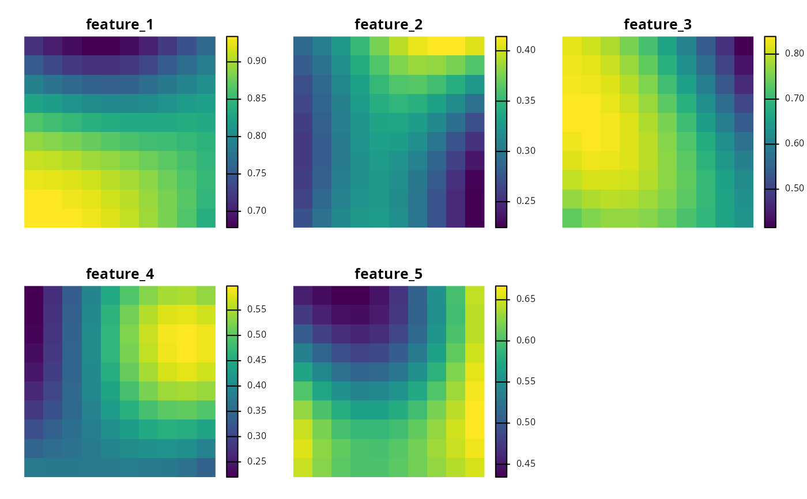
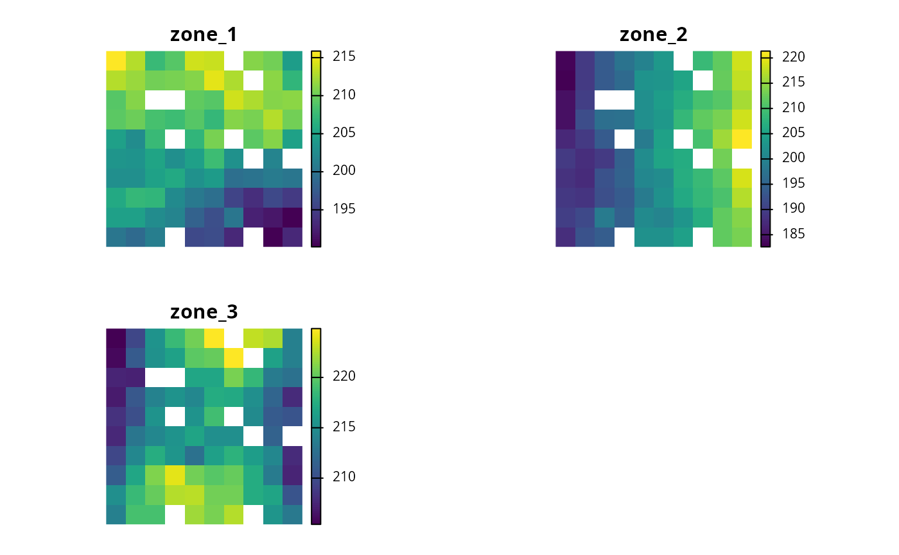
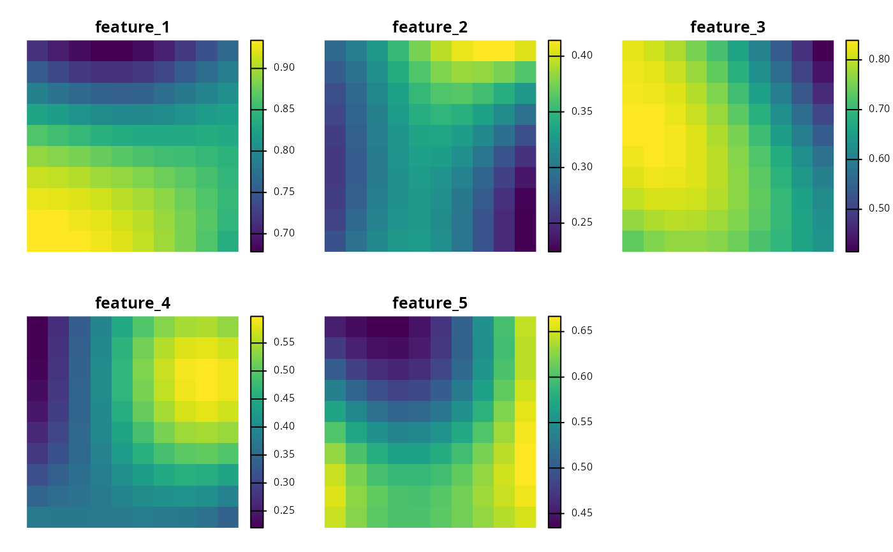
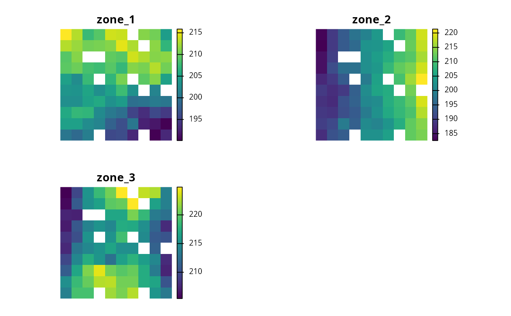

A set of functions are available for importing simulated datasets. These datasets are designed for creating small example spatial prioritizations.
Usage
get_sim_pu_polygons()
get_sim_zones_pu_polygons()
get_sim_pu_lines()
get_sim_pu_points()
get_sim_pu_raster()
get_sim_locked_in_raster()
get_sim_locked_out_raster()
get_sim_zones_pu_raster()
get_sim_features()
get_sim_zones_features()
get_sim_phylogeny()Format
get_sim_pu_polygons()sf::st_sf()object.get_sim_zones_pu_polygons()sf::st_sf()object.get_sim_pu_lines()sf::st_sf()object.get_sim_pu_points()sf::st_sf()object.get_sim_pu_raster()terra::rast()object.get_sim_zones_pu_raster()terra::rast()object.get_sim_locked_in_raster()terra::rast()object.get_sim_locked_out_raster()terra::rast()object.get_sim_features()terra::rast()object.get_sim_zones_features()ZonesRaster()object.get_sim_phylogeny()terra::rast()object.
Single zone datasets
The following functions are provided for generating spatial prioritizations that only contain a single management zone.
get_sim_pu_raster()Import planning unit data that are stored in raster format. Here, cell values indicate planning unit cost and missing (
NA) values indicate that a cell is not a planning unit.get_sim_locked_in_raster()Import planning unit data that are stored in raster format. Here, cell values are binary and indicate if planning units should be locked in to a solution.
get_sim_locked_out_raster()Import planning unit data that are stored in raster format. Here, cell values are binary and indicate if planning units should be locked out from a solution.
get_sim_pu_polygons()Import planning unit data stored in vector format. Here, planning units are represented using spatial polygons (e.g., each polygon corresponds to a different management areas). The data contains columns indicating the expenditure required for prioritizing each planning unit (
"cost"column), if the planning units should be selected in the solution ("locked_in"column), and if the planning units should never be selected in the solution ("locked_out"column).get_sim_pu_points()Import planning unit data stored in vector format. Here, planning units are represented using spatial lines (e.g., each line corresponds to a different section along a river) . The attribute table follows the same conventions as for
sim_pu_polygons.get_sim_pu_lines()Import planning unit data stored in vector format. Here, planning units are represented using spatial points (e.g., each point corresponds to a different site) . The attribute table follows the same conventions as for
sim_pu_polygons.get_sim_features()Import feature data stored in raster format. Here, data describe the spatial distribution of five species. Each layer corresponds to a different species, and cell values indicate habitat suitability.
get_sim_phylogeny()Import phylogenetic tree for the ten species.
Multiple zone datasets
The following functions are provided for generating spatial prioritizations that contain multiple management zones.
get_sim_zones_pu_raster()Import planning unit data for multiple management zones that are stored in raster format. Here, each layer indicates the cost for a different management zone. Cells with
NAvalues in a given zone indicate that a planning unit cannot be allocated to that zone in a solution. Additionally, cells withNAvalues in all layers are not a planning unit.get_sim_zones_pu_polygons()Import planning unit data for multiple management zones stored in vector format. Here, planning units are represented using spatial polygons. The data contains columns indicating the expenditure required for prioritizing each planning unit under different management zones (
"cost_1","cost_2", and"cost_3"columns), and a series of columns indicating the value that each planning unit that should be assigned in the solution ("locked_1","locked_2","locked_3"columns). In these locked columns, planning units that should not be locked to a specific value are assigned a missing (NA) value.get_sim_zones_features()Import feature data for multiple management zones stored in raster format. Here, data describe the spatial distribution of ten species under three different management zones.
Examples
# load data
sim_pu_polygons <- get_sim_pu_polygons()
sim_zones_pu_polygons <- get_sim_zones_pu_polygons()
sim_pu_lines <- get_sim_pu_lines()
sim_pu_points <- get_sim_pu_points()
sim_pu_raster <- get_sim_pu_raster()
sim_zones_pu_raster <- get_sim_zones_pu_raster()
sim_locked_in_raster <- get_sim_locked_in_raster()
sim_locked_out_raster <- get_sim_locked_out_raster()
sim_phylogeny <- get_sim_phylogeny()
sim_features <- get_sim_features()
sim_zones_features <- get_sim_zones_features()
# plot raster data
# \dontrun{
par(mfrow = c(2, 2))
plot(sim_pu_raster, main = "planning units (raster)", axes = FALSE)
plot(sim_locked_in_raster, main = "locked in units (raster)", axes = FALSE)
plot(sim_locked_out_raster, main = "locked out units (raster)", axes = FALSE)
# plot vector planning unit data
par(mfrow = c(1, 1))
 plot(sim_pu_polygons)
plot(sim_pu_polygons)
 plot(sim_pu_lines)
plot(sim_pu_lines)
 plot(sim_pu_points)
plot(sim_pu_points)
 # plot vector planning unit data for multiple management zones
plot(sim_zones_pu_polygons)
# plot vector planning unit data for multiple management zones
plot(sim_zones_pu_polygons)
 # plot phylogeny data
par(mfrow = c(1, 1))
plot(sim_phylogeny, main = "simulated phylogeny")
# plot phylogeny data
par(mfrow = c(1, 1))
plot(sim_phylogeny, main = "simulated phylogeny")
 # plot feature data
par(mfrow = c(1, 1))
plot(sim_features, axes = FALSE)

# plot cost data for multiple management zones
par(mfrow = c(1, 1))
plot(sim_zones_pu_raster, axes = FALSE)

# plot feature data for multiple management zones
plot_names <- paste0(
"Species ",
rep(
seq_len(number_of_zones(sim_zones_features)),
number_of_features(sim_zones_features)
),
" (zone ",
rep(
seq_len(number_of_features(sim_zones_features)),
each = number_of_zones(sim_zones_features)
),
")"
)
plot(
terra::rast(as.list(sim_zones_features)),
main = plot_names, axes = FALSE
)
# plot feature data
par(mfrow = c(1, 1))
plot(sim_features, axes = FALSE)

# plot cost data for multiple management zones
par(mfrow = c(1, 1))
plot(sim_zones_pu_raster, axes = FALSE)

# plot feature data for multiple management zones
plot_names <- paste0(
"Species ",
rep(
seq_len(number_of_zones(sim_zones_features)),
number_of_features(sim_zones_features)
),
" (zone ",
rep(
seq_len(number_of_features(sim_zones_features)),
each = number_of_zones(sim_zones_features)
),
")"
)
plot(
terra::rast(as.list(sim_zones_features)),
main = plot_names, axes = FALSE
)
 # }
# }